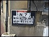
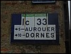

Quelques plaques Michelin de l'Allier
Bessay-sur-Allier (1)
Bessay-sur-Allier (2)

Varennes-sur-Allier

Villeneuve-sur-Allier
cliquez sur les vignettes pour les agrandir
Retour
Generated with Arles Image Web Page Creator
.JPG "Bessay-sur-Allier (1).JPG")
.JPG "Bessay-sur-Allier (2).JPG")